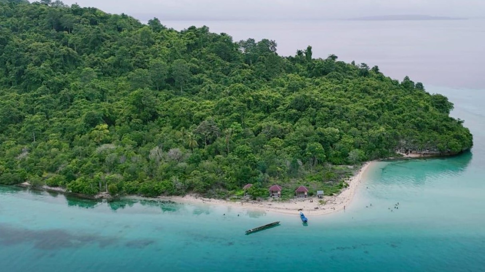

Pulau Pendek
Salah satu pulau wisata terkenal di Kabupaten Buton adalah Pulau Pendek, yang memiliki keterkaitan sejarah dengan Desa Boneatiro. Untuk mencapai Pulau Pendek, pengunjung harus menggunakan transportasi laut dari Desa Boneatiro dengan biaya sekitar Rp400.000 untuk perjalanan pulang-pergi. Pulau ini memiliki potensi pariwisata bahari yang besar berkat keramahan masyarakatnya yang tetap menjunjung tinggi nilai-nilai adat. Selain itu, Pulau Pendek menawarkan keindahan alam yang menakjubkan, seperti hamparan pasir putih, wisata bawah laut dengan terumbu karang yang indah, serta lokasinya yang terhubung dengan beberapa spot wisata spektakuler lainnya, di antaranya Danau Langkadea.